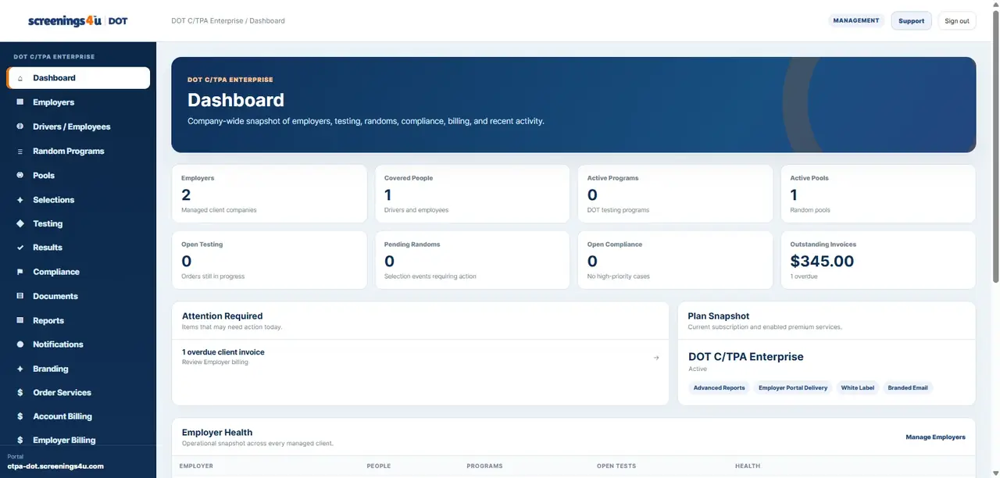
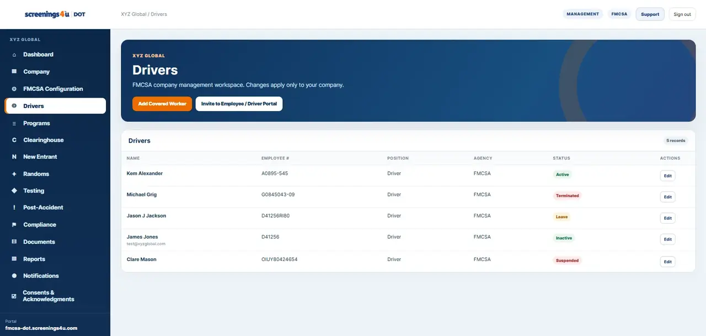
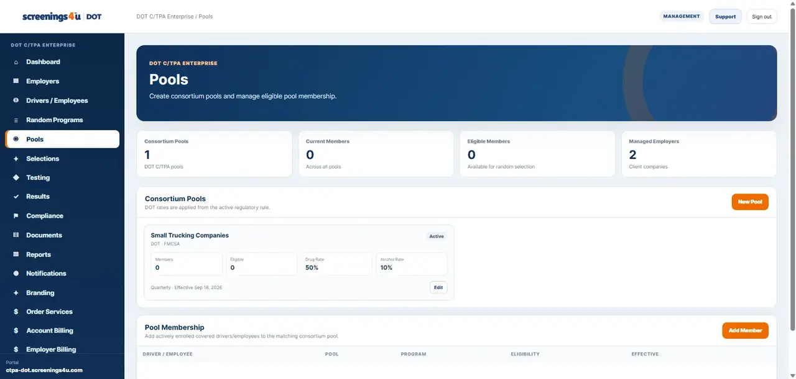
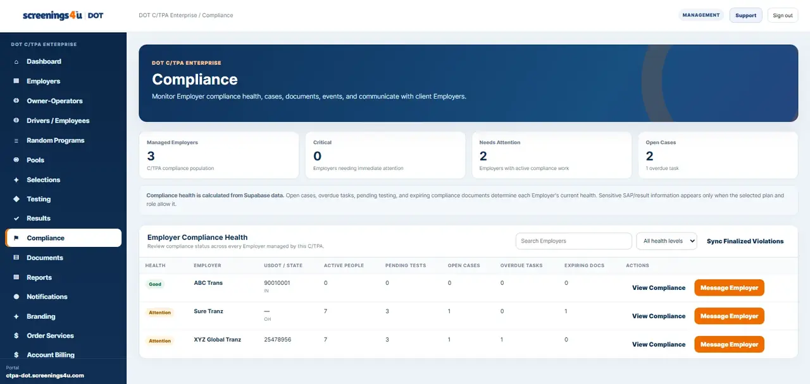

Employees & Drivers
Manage workforce and driver records, program assignments, locations and account users.
Bring workforce records, programs, random testing, testing orders, results, documents, compliance work and reporting into a single operating workspace.

Workforce DOT is structured around the real work inside regulated workforce programs, not a generic task list.
Manage workforce and driver records, program assignments, locations and account users.
Manage pool participation, employee eligibility and random selections in one workflow.
Create and manage testing orders, outside-provider records and collection-site activity.
View authorized result summaries and sensitive result detail when account permissions allow.
Track open compliance work, deadlines, post-accident activity and policy acknowledgments.
Keep compliance documents, certificates, agreements and workforce records organized.
Generate standard operational reports and advanced regulatory / MIS reporting where enabled.
Use testing and compliance notifications to surface work that needs attention.

Workforce records stay tied to program enrollment, testing activity, locations, documents and compliance status.
Random program activity remains connected to the same workforce records and testing workflows used elsewhere in the platform.


Testing orders, collection-site activity and authorized results stay attached to the operational record behind each test.
Eligible Employer plans include tools for action visibility, post-accident management, policy acknowledgments and training records.


Standard operational reporting is available across plans, with advanced reporting and audit history available where enabled.
Capabilities are enabled according to the way your organization operates inside the DOT testing and compliance ecosystem.
Manage your own workforce, testing, random programs, compliance work, documents and reports.
Explore Employers →Manage individual program participation, testing obligations, result records, documents and notifications.
Explore Owner-Operators →Manage employer clients, consortium pools, testing, reporting, invoicing, customer delivery and branding tools.
Explore C/TPAs →